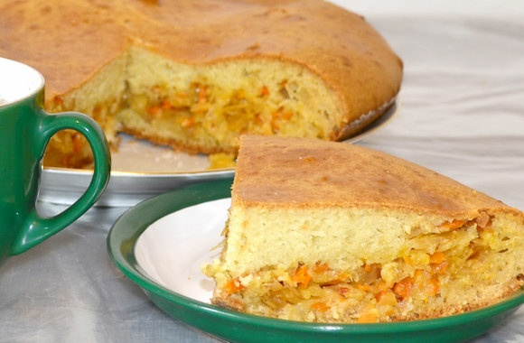

Киш с курицей и овощами
Для приготовления вам понадобится:
- слоёное бездрожжевое тесто 1 пласт
- куриное филе 350 гр
- овощи: томаты, брокколи, цуккини, шампиньоны
- 3 яйца
- сливки 1 стакан(от 15%)
- сыр 150-200 гр
- вам нужно заранее разморозить тесто.
- куриное филе нужно нарезать кубиком(или произвольно)
и обжаривать на оливковом/растительном масле. посолить.
- взбейте три яйца со сливками, тоже посолите.
- тесто перенесите в форму, разровняйте и выложьте
овощи(их нужно нарезать)
- далее выложьте курицу. залейте яичной смесью и выпекайте
в разогретой до 180 градусов духовке около 20 минут.
- через двадцать минут посыпьте натёртым сыром и отправьте
в духовку еще на 10 минут.
киш готов, приятного аппетита !!!
Заливной пирог с капустой

Для приготовления вам понадобится:
Тесто:
- 2 яйца
- 300 гр кефира
- 200 гр муки
- 1 чайная ложка соды
- 1 чайная ложка лимонного сока
Начинка:
- 1/4 кочана капусты
- 1/2 луковицы
- 1 морковь
- для начала приготовьте начинку:
натрите морковь на терке, мелко нарежьте
лук и пошинкуйте капусту.
- на растительном масле обжарьте лук с
морковью около 5-7 минут.
- переложите капусту и тушите 15 минут
иногда помешивая. добавьте соль и перец.
- перемешайте и оставьте ещё минут на 5.
- для приготовления теста смешайте просеянную
муку, кефир и яйца. добавьте соду и лимонный сок.
замешайте тесто.
- в форму смазанную сливочным маслом отправьте
половину теста, далее распределите всю начинку, сверху
залейте оставшимся тестом.
- отправьте пирог в разогретую до 190 градусов духовку
на 40 минут.
Пирог готов, приятного аппетита !!!